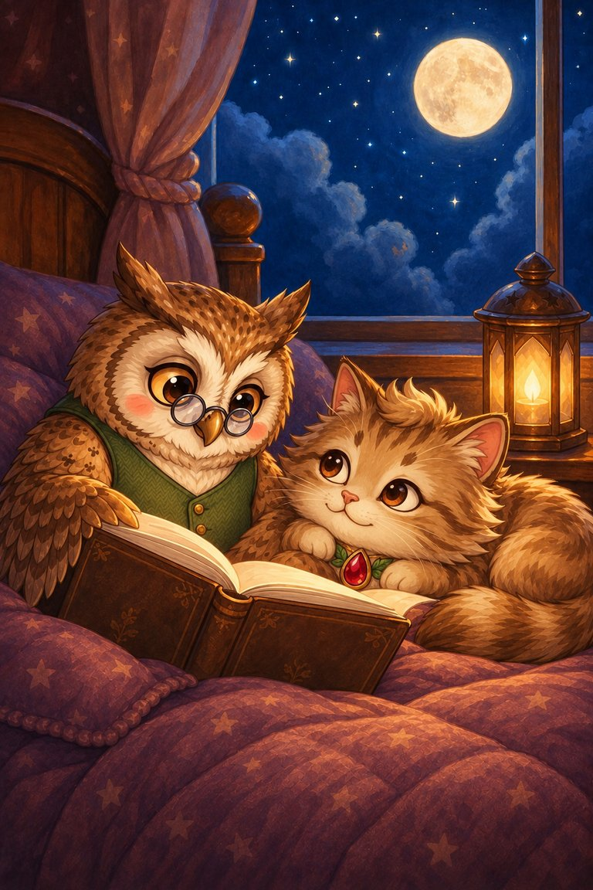
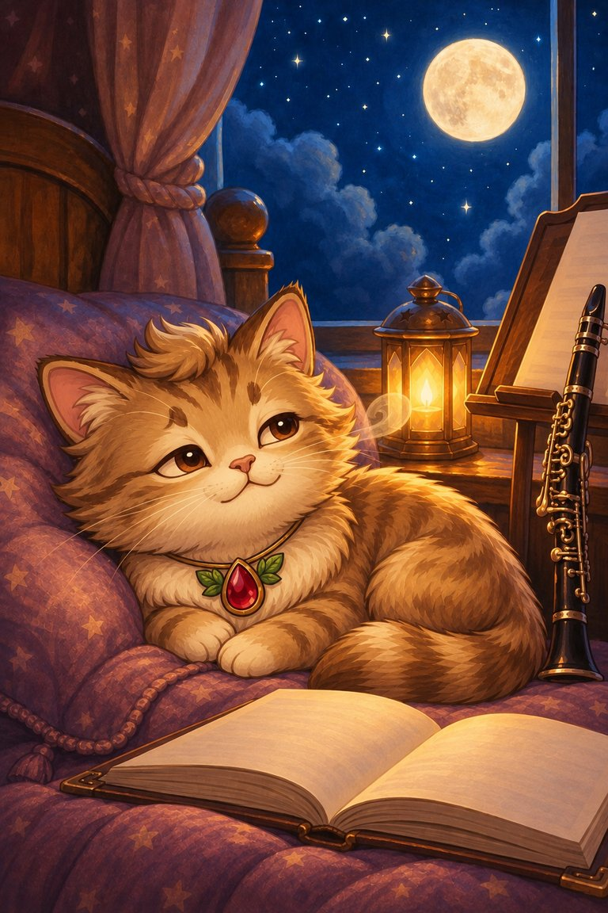
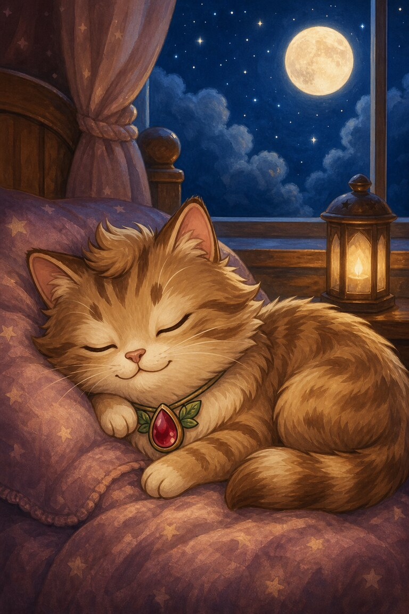

Page 1 of 4
Meow-inara curls beside the moonlit window, but every tiny sound makes her ears spring up. Tomorrow’s concert keeps marching through her thoughts.
A four-page bedtime story about concert nerves, slow breathing and a first note that can wobble.
5 printed pages · 0.7 MB · A4 or US Letter. Download PDF · Open PDF to printOpens in a new tab. Use the PDF viewer's Print control. To use less ink, read online and choose only the questions on page 5 in Print.
Meow-inara curls beside the moonlit window, but every tiny sound makes her ears spring up. Tomorrow’s concert keeps marching through her thoughts.

Wise Owl chooses a bedtime story about a musician whose first note wobbled. She reads slowly and leaves room between each sentence.

Meow-inara breathes in during one quiet line and breathes out during the next. The concert is still tomorrow, but it no longer fills the whole room.

At last she feels sleepy. “My first note can wobble too,” she murmurs, closing her eyes beneath the patient moon.
She accepted that her first note might wobble too. She listened, breathed slowly and stopped expecting a perfect first note.
Breathed slowly in and out.
SnackPack Sentences & Spelling has many more short reads like this one, plus the Reading Trail, word packs and literacy games.
Another quiet read-together storyTed-E-Bear’s Blanket Fort
Know a family or class who would enjoy it?